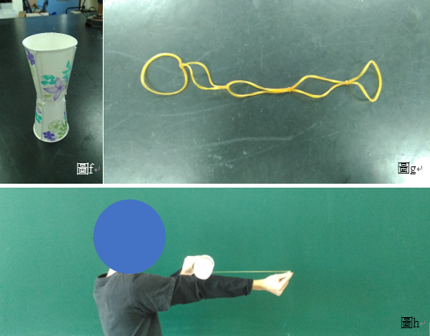
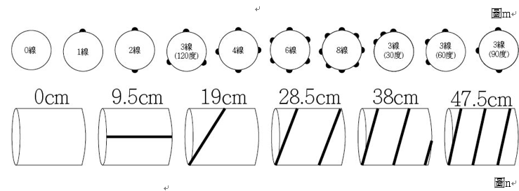
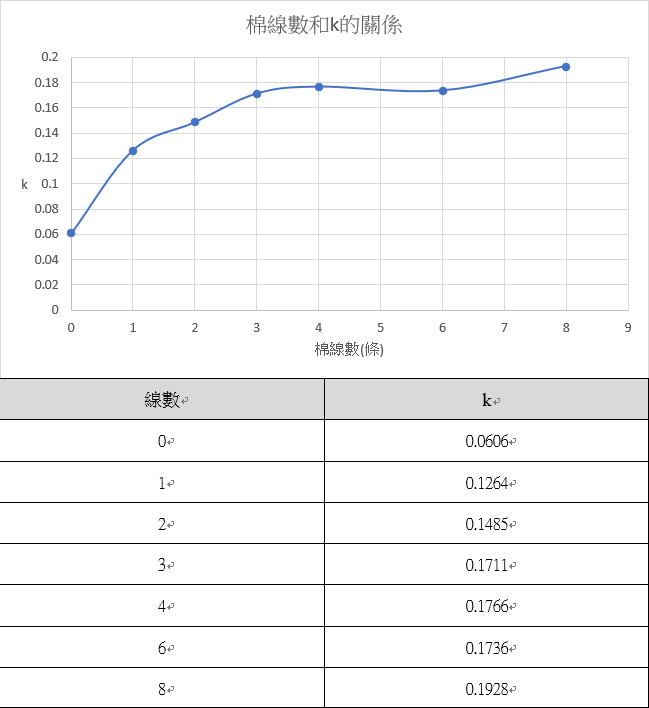

「風」「流」倜儻──馬格努斯效應與亂流邊界層之研究
組員:王奕霖、徐偉育、黃榆庭
摘要
當球體的轉動向量和風速向量垂直時，以圖a為例，球體下方由球體所帶動的氣流與氣流方向相反，使氣流速度降低，而球體上方由球體帶動的氣流與氣流方向相同，流速則會加快，根據白努力定律，流速與壓力成負相關，所以球體下方會產生相較於上方大的壓力，形成一個向上的力，此現象為｢馬格努斯效應」。
研究動機
棒球是我們的國球，我們三人對棒球也有非常程度的喜愛，而在棒球比賽中，投手會投出擁有各式各樣球路變化的棒球，我們卻不完全了解其中的原理，也很好奇為什麼能有這些變化，於是，我們希望藉由這次的專題研究了解其中的原理。
在棒球運動學中，投手所擲出的球因縫線紋路以及旋轉方向可分為二縫線球以及四縫線球，代表棒球旋轉時垂直於轉軸的平面上的縫線數(圖b)，會影響棒球運動時接觸空氣所受的力。凸起的縫線會使通過棒球表面的氣流在縫線後方的表面形成「亂流邊界層」，該邊界層的流速會較快，如圖c，下方氣流先進入亂流邊界層使速度加快，空氣相較於上方可在球面移動更遠的距離，使尾流上揚，此時因尾流受到向上的力，由牛頓第三運動定律可知棒球會受到向下的力，因此影響棒球受力的不只是馬格努斯力。使我們想對上述現象進行研究。
研究目的
一、探討不同縫線的數量對飛行紙杯的影響。
二、探討不同縫線的間距對飛行紙杯的影響。
三、探討不同縫線的數量對氣流中旋轉的紙滾筒產生的馬格努斯效應的影響。
四、探討不同縫線的間距對氣流中旋轉的紙滾筒產生的馬格努斯效應的影響。
五、探討不同縫線的長度對氣流中旋轉的紙滾筒產生的馬格努斯效應的影響。
研究設備及器材

研究過程及方法
實驗一：飛行紙杯
(一) 步驟：
1. 將兩紙杯杯底相接，用膠帶固定。
2. 將棉線以垂直與杯緣的方向固定在杯壁上(如圖f)。
3. 將五條橡皮筋編成一串，會產生四個打結點(如圖g)。
4. 以每兩個打結點的間距長度繞兩杯子相接處(中心)兩圈，總共六圈。
5. 左手拇指和食指抓住兩杯子中央，右手抓住下個打結點將手臂伸直(如圖h)。
6. 使拉直的橡皮筋呈水平後放開左手射出。
(步驟4~6是為了盡可能使每次發射的初始條件相同)
7. 以tracker取得3次軌跡的趨勢，以圖表運算得出平均的軌跡趨勢，比較不同情況的飛行軌跡。
實驗方向：(圖i中為杯子截面圖，黑點為線黏著的位置(繩線大小未依比例繪製))
1. 不同棉線數量：0條、1條、2條、4條(都等間距)。
2. 不同棉線間距：2條線180度、2條線90度(度數代表兩條線在圓杯上相距的圓周角)
實驗二：對固定自轉的滾筒在風洞中實驗
(一) 步驟：
1. 將棉線以垂直於滾筒截面的方向固定於紙滾筒的側面。
2. 滾筒固定於馬達上後，將馬達至於電子秤上，將電子秤歸零。
3. 將光電計時器固定於馬達上，使光電閘可通過旋轉盤上的孔洞(如圖j)。
4. 由步驟3.測量馬達轉100圈所需的時間，藉此推算rps(每秒旋轉圈數)。
5. 風速計固定於支架上，至於馬達轉軸的延長線上測量風速(如圖k)。
6. 風洞的風與旋轉的滾筒產生馬格努斯力，將垂直施加在電子秤上，藉此測量力的大小(如圖l)。
7. 測量10組力-轉速的數據加上1組(0,0)數據並作圖，做趨勢線得出趨勢線斜率。
8. (在轉速為0時，產生的力也應為0，所以加入(0,0)的數據)
9. 記錄在不同棉線數量、間距下，轉速對於馬格努斯之力的斜率的影響。
(二) 實驗方向：(圖m中為滾筒截面圖，黑點為線黏著的位置(棉線大小未依比例繪製))
1. 不同棉線數量：0條、1條、2條、3條、4條、6條、8條(都等間距)。
2. 不同棉線間距(3條線)：30度、60度、90度、180度。
3. 不同棉線長(以斜向環繞的方式，如圖n)：0cm、9.5cm、19cm、28.5cm、38cm、47.5cm
4. (圖n為滾筒側面圖，黑線代表棉線)
研究結果
飛行紙杯：
(一) 不同線數量的軌跡比較(單位：公尺)：
(二) 不同線間距的軌跡比較(單位：公尺)：
不同線數會影響軌跡，但不同間距對軌跡的影響不大，代表不同線數對馬格努斯力的大小影響較大，間距則較無影響，將由實驗二驗證。
滾筒實驗(詳細實驗數據見附錄)
(一) 斜率分析(舉例)：0線(風速：2.80m/s)：
(二) 棉線數和k的關係：
(三) 間距和k的關係：
(四) 線長和k的關係：
討論與未來展望
實驗結果與討論：
(一) 棉線數與k值的關係：觀察圖表可發現0~2條線時k值與線數量呈正相關且趨勢漸緩，3線以上趨勢十分不明顯。推論其原因是在線數越來越多時，間距會逐漸縮小，棉線所產生的亂流邊界層與其他棉線的亂流邊界層重疊，使3線以上的滾筒表面非亂流邊界層的範圍甚小，k值也就差距不大。
(二) 亂流邊界層與k值的關係：當繩線數量越多時，亂流邊界層的範圍也越大，已知亂流邊界層的流速較快，在白努力定律中：
(三) 間距與k值的關係：觀察圖表可發現30、60、90度的情況下k值十分相近，而120度則略低。90度的間距和4線相同，60度和6線相同，30度和12線相同，都是大於3線，推測原因和(一)相同，是因為亂流邊界層重疊而使k值變化不大。而間距最大的120度居然k值最小，我們推測是因為間距過大時，亂流邊界層成不連續的分布，而使亂流邊界層效力減弱，影響k值。
(四) 線長與k值的關係：觀察圖表可發現趨勢十分近似拋物線，推測其原因為在線長越長的情況下，亂流邊界層的範圍增加，使k值上升，但在更長的長度下，線和滾筒底面的夾角變小，線的走向與風速向量越趨平行，線的影響會越小，使亂流邊界層不易產生，應該會越來越接近0線的狀況。
未來展望：
(一) 實驗90~120度間距下的情況，是否可以用上述實驗結果與討論之第二點的說法解釋，並找出其規則和亂流邊界層的影響範圍。
(二) 以兩條線實驗，驗證間距漸小時，k值是否接近一條線的狀況，並試圖找出亂流邊界層的影響範圍。
(三) 在低轉速的情況下，亂流邊界層的影響如實驗動機中所述之情況，但在高轉速中難以分析，試圖整理出適當的系統描述高轉速時亂流邊界層的影響。
(四) 設計實驗了解「亂流邊界層不連續分布」與k值的關係。
結論
一、k值與線數呈正相關，在3線以上正相關開始不顯著。
二、因為亂流邊界層重疊，間距30~90度對k值影響甚小。
三、線的走向與風速向量愈平行，愈難產生亂流邊界層。
參考資料及其他
毛筠茜、周秉陞、莊朝宗、張庭梧 (民104)。中華民國第55屆中小學科學展覽會(編號080811)
二、 李庭安、劉中棠(民106)。2017全國科學探究競賽-這樣教我就懂
三、 黃郁哲(民104)。棒球中的物理，取自https://www.shs.edu.tw/works/essay/2015/03/2015033106400696.pdf
四、 馬格努斯效應-维基百科，自由的百科全書。2018 年 9 月 25 日，取自https://zh.wikipedia.org/wiki/%E9%A9%AC%E6%A0%BC%E5%8A%AA%E6%96%AF%E6%95%88%E5%BA%94
五、 Baseball Aerodynamics 棒球空氣動力學-Youtube，網路影片。2018 年 9 月 25 日，取自https://www.youtube.com/watch?v=TFNl4R-vT50&t=612s